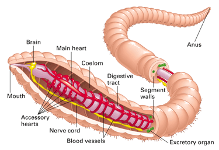
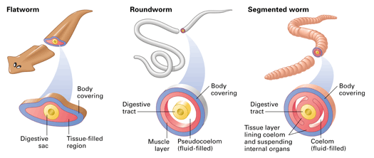

Objectives
- Describe body segmentation in annelids.
- Identify three classes of annelids.
Key Terms
If you've ever examined an earthworm, you probably noticed that its body consists of many segments. Segmentation is the key characteristic of the phylum to which earthworms belong.
The Body of an Annelid
Earthworms and other segmented worms, called annelids, belong to the phylum Annelida, which means "little rings." Except for a distinct head and tail, an annelid's body segments are all very similar (Figure 23-15). For example, an earthworm's body is divided into sections by internal walls. There is a dense cluster of nerve cells and waste-excreting organs in each segment. However, the digestive tract is not segmented. It penetrates the segment walls and runs the length of the animal, as do the nerve cord and two main blood vessels. Each body segment contains smaller blood vessels connected to these two main blood vessels. Annelids have a closed circulatory system, where the blood remains contained within vessels. Nutrients, oxygen, and wastes diffuse in and out through the vessel walls.
|  |
Figure 23-15
Annelid bodies, such as that of an earthworm, are segmented externally and internally. |
Like flatworms and roundworms, annelids are bilaterally symmetrical and have three tissue layers. However, the tissue layers are organized differently in each of the three groups of worms (Figure 23.16). Flatworms are examples of acoelomates—animals that lack a body cavity. The pseudocoelom of roundworms is a fluid-filled body cavity in direct contact with the digestive tract. The body cavity of annelids (as well as many other animals you will read about later) is called a coelom. A coelom is a fluid-filled cavity that is completely lined by tissue that originated in the embryo from mesoderm tissue.
|  |
Figure 23-16
These cross sections contrast three basic body forms for animals with bilateral symmetry: acoelomate (flatworms), pseudocoelomate (roundworms), and coelomate (annelids and many other animals). The colors of the layers in the cross sections indicate body parts that develop from three tissue layers in the embryo (blue = ectoderm; red = mesoderm, and yellow = endoderm). |
The Diversity of Annelids
There are about 15,000 known species of annelids, grouped into three classes. Class Polychaeta includes many species, such as sandworms, that scavenge for food on the ocean floor. Earthworms belong to class Oligochaeta. These worms are particularly important because their tunneling through soil helps air to circulate in it, which helps plants to grow. Class Hirudinea includes the parasitic leeches.
Concept Check 23.6
1. Describe the body structure of an earthworm.
2. What are the three classes of annelids?